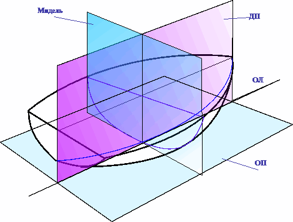

Диаметральная плоскость (ДП) - вертикальная продольная плоскость симметрии, разделяющая судно (не то которое под койкой) на правую и левую
половины. Пересечение ДП с наружными поверхностями корпуса дает на боковой проекции линии киля, форштевня, ахтерштевня и палубы.
Основная плоскость(ОП) - горизонтальная плоскость, касательная к линии киля (самой нижней кромки обшивки на судне) в его нижней точке.
Основная линия (ОЛ) - линия пересечения ОП с ДП.
Плоскость мидель-шпангоута (миделя) - вертикальная поперечная плоскость, проходящая посредине длины судна, обычно через наиболее полное
поперечное сечение.
Галс — движение судна относительно ветра. Различают левый (ветер дует в левый борт /англ. port side) и правый (ветер дует в правый борт/ англ. starboard) галсы. При расхождении парусных судов в ситуации пересечения курсов судно, идущее левым галсом, обязано уступить судну, идущему правым галсом, для избежания столкновения.
Фарва́тер (голл. vaarwater, от varen — плыть и water — вода) — судовой ход, безопасный в навигационном отношении и обозначенный на местности и/или карте проход по водному пространству, характеризующийся достаточными глубинами и отсутствием препятствий для судоходства, например, затопленных судов, рифов и мин.